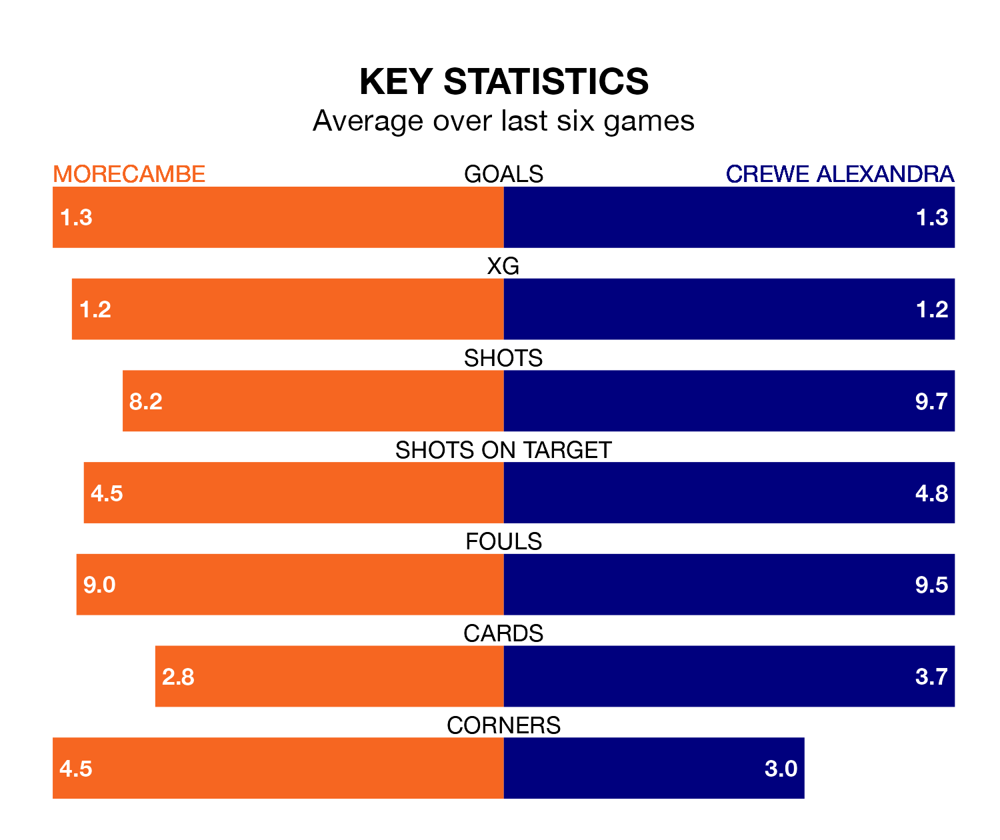

Crewe Alexandra visit Morecambe at the Mazuma Stadium on late Tuesday on the back of four consecutive wins in EFL League Two.
Crewe have picked up 13 points from their last six games, and they face a Shrimps side who also won their last match, and have collected six points from the last possible 18.
With 53 goals in 28 games so far this season, Crewe are scoring more than average in the league with 1.9 goals per game. And they are conceding at an average rate, letting in 41 goals at a rate of 1.5 per game.
Morecambe, meanwhile, are average scorers, with 1.5 goals per game. They have conceded 1.7 goals per game.
In the last 10 years, Morecambe and Crewe have played each other on 10 occasions. Morecambe won one of them, Crewe six, and they drew three times.
On average, the Shrimps scored 0.8 goals and the Railwaymen 2.1 in those matches.
Their last meeting was on December 29 2021, when Crewe won 2-1 away.
The Railwaymen are fourth in the table after 28 games, of which they have won 14 and drawn eight, earning 50 points.
The Shrimps are nine places behind the visitors in 13th, with 10 wins and seven draws putting them on 37 points.
In Michael Mellon, the home team have one of the league's most on-form strikers so far this season. He has notched 13 goals in 22 appearances, to sit eighth in the scoring charts.
Crewe's top scorers, with nine goals each, are Elliot Nevitt, Chris Long and Courtney Baker-Richardson.
Morecambe's last match was on Saturday, a 2-1 win against Milton Keynes Dons, with Charlie Brown and Jordan Michael Slew getting the goals for the Shrimps.
Crewe beat Barrow 3-1 last time out, also on Saturday, with Lewis Billington, Matúš Holíček and Nevitt on the scoresheet.
Tuesday's match will be refereed by Ben Toner, who has taken charge of four EFL League Two games so far this season, issuing one red card and booking 22 players. He has awarded three penalties.
He is yet to oversee a match featuring either Morecambe or Crewe this season.
Updated: 09:18 (UTC), 23/01/24